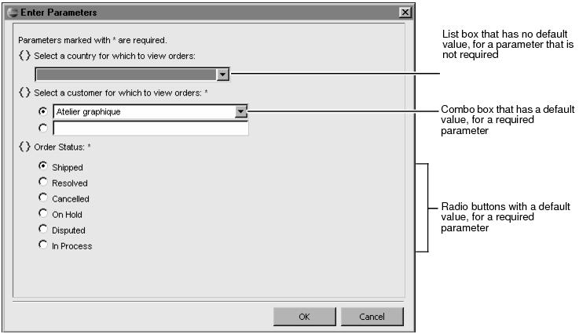

List boxes, combo boxes, and radio buttons are ideal mechanisms for providing a list of choices to a user. The differences between these user interface elements are as follows:
|
n
|
In addition to presenting a list of choices, the combo box also supports the user typing a value. This feature is useful if the user wants to supply a string pattern. For example, instead of selecting a specific name for a customer name parameter, the user can type M% to get all customers whose names start with M. This technique assumes that the user is familiar with SQL pattern-matching syntax.
|
Figure 12‑11 shows an example of an Enter Parameters dialog that displays a list box, combo box, and radio buttons.

You create a list of values for a list box or a combo box using one of the following techniques:
For radio buttons, you can only create a static list of values. In a static list, you specify the values to display to the report user during report design. In a dynamic list, BIRT retrieves the values from the data source when the report runs.
Create a dynamic list for values that are frequently updated in the data source. New customer names or product names, for example, are often added to a data source. If you create a static list of these values, you have to update the list manually to match the values in the data source.
Creating a static list, however, provides more control over the list of values to display to the report user. For example, you might want to present only certain values to the user, or localize the values.